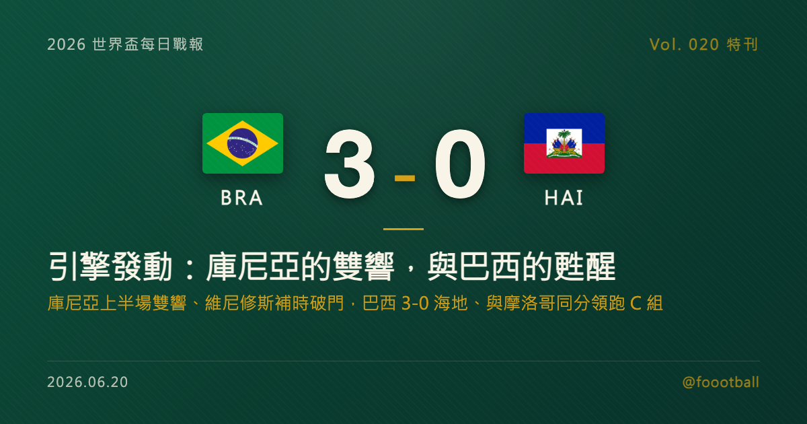

引擎發動：庫尼亞的雙響，與巴西的甦醒
2026 世界盃 C 組次輪，巴西在費城 3-0 完勝海地。前鋒庫尼亞（Matheus Cunha）上半場第 23、36 分鐘雙響砲，維尼修斯（Vinícius Júnior）在上半場補時第 48 分鐘再下一城，巴西半場就鎖定大局。對首輪被摩洛哥逼平、被指慢熱的巴西而言，這是一場及時的釋放。這篇特刊，把三顆球、巴西的調整軌跡，與海地 52 年的歸途，逐項拆開來講。

2026 世界盃特刊｜Vol. 020 番外
有一種球隊，最讓人放心，也最讓人不安——奪冠熱門。
首輪被 2022 世界盃四強摩洛哥 1-1 逼平之後，外界對安切洛蒂（Carlo Ancelotti）治下這支「慢熱五星軍團」的疑慮，正一點一滴累積。慢熱本身不是罪，48 隊、賽程更長的本屆世界盃，豪門有的是時間調整；但疑慮一旦開始發酵，就需要一場乾脆的勝利來止血。
2026 年 6 月，在費城的 Lincoln Financial Field，巴西面對睽違 52 年重返世界盃的海地。九十分鐘過後，計分板是 3-0，而真正的故事，在上半場就講完了——庫尼亞（Matheus Cunha）第 23、36 分鐘的雙響砲，加上維尼修斯（Vinícius Júnior）上半場補時第 48 分鐘的進球，巴西半場就把比分鎖定在 3-0。這一夜值得慢慢拆——先拆這三顆球，再拆巴西從被逼平到釋放的調整，接著拆 C 組的出線算盤，最後，也得認真聊聊海地這趟五十二年的歸途。
一、三顆球的解剖：兩記庫尼亞，一記維尼修斯
巴西這場勝利的關鍵，是把進球集中在上半場——而上半場的主角，是庫尼亞。
第 23 分鐘，第一球——庫尼亞打破僵局。 比賽前二十分鐘，巴西控球占優卻一時難以洞穿海地的防線，氣氛與首輪對摩洛哥時的「悶」有幾分相似。是庫尼亞在第 23 分鐘率先把這層窗戶紙捅破，為巴西取得領先。先進球的意義，遠不只是 1-0——它讓巴西從「需要證明自己」的焦慮，切換回「按自己節奏踢」的從容。
第 36 分鐘，第二球——庫尼亞的個人雙響。 領先後的巴西踢得更開，第 36 分鐘庫尼亞再下一城、完成個人上半場雙響。短短十三分鐘內的兩球，把比分推到 2-0，也把比賽的懸念基本抹平。對庫尼亞個人而言，這對雙響是一份沉甸甸的履歷——在巴西這支星光熠熠、前場競爭激烈的球隊裡，能在世界盃舞台上半場獨進兩球，是用表現替自己的位置背書。
第 48 分鐘，第三球——維尼修斯的句點。 上半場補時第 48 分鐘，維尼修斯攻入第三球，把比分擴大到 3-0。半場結束前的這一擊，徹底拿走了下半場的所有懸念，也讓巴西得以在下半場從容控制節奏、保留體能。對維尼修斯來說，這也是一顆「歸隊」的進球——他在首輪對摩洛哥時曾為巴西扳平，本場再添一城，巴西最被寄予厚望的攻擊手延續著手感。
一記破僵、一記擴大、一記封門，三顆球串起來，幾乎是一份「奪冠熱門該如何處理弱旅」的範本：早進球、滾雪球、上半場結束戰鬥。
更值得注意的是這三球的時間分布。23 分鐘、36 分鐘、48 分鐘——全部集中在上半場的後半段到補時，像是巴西在前二十分鐘的試探之後，找到了海地防線的縫隙，便一口氣連續打擊。這種「一旦找到節奏就連續得手」的能力，恰恰是首輪對摩洛哥時所欠缺的：那一場，巴西始終沒能把場面上的優勢，轉化成連續的進球。本場的差別，不只在於對手強弱，也在於巴西自己把握機會的效率明顯回升——而效率，往往才是奪冠球隊與其他球隊之間，最難量化卻最關鍵的分野。
二、慢熱的豪門：從被摩洛哥逼平，到本場釋放
要看懂這場 3-0 的份量，得把鏡頭倒回首輪。
首輪面對 2022 世界盃四強摩洛哥，巴西先由薩伊巴里失球落後，直到第 32 分鐘才靠維尼修斯扳平，最終 1-1 收場。那場球，巴西控球與威脅都不缺，卻被摩洛哥用紀律與整體性卡住節奏——這正是安切洛蒂這支巴西當時的寫照：天賦滿溢，但磨合未竟，啟動偏慢。
慢熱在豪門身上是雙面刃。一方面，本屆 48 隊、小組賽容錯空間更大，一場平局還遠不到拉警報的程度；另一方面，巴西這個名字承載的期待太重，連「踢得普通」都會被放大檢視。本場對海地，就是巴西卸下這層壓力的最好場合：對手實力有限、又是巴西急需的一場大勝。
而巴西交出的答案是乾脆的——三球全在上半場到手。這場勝利之所以重要，不只在於拿下三分，更在於它的「方式」：早早進球、半場了結、下半場輕鬆。對一支被說「啟動太慢」的球隊而言，沒有比「上半場就解決戰鬥」更有力的回應。
值得一提的是，安切洛蒂這支巴西的「慢熱」，某種程度上是球隊重建期的必然。一位帶慣歐洲頂級豪門的名帥接手桑巴軍團，需要時間把南美球員的即興與歐洲化的紀律揉在一起；首輪對摩洛哥的悶，正是這種磨合尚未完成的徵狀。本場面對防守強度有限的海地，巴西得以把訓練場上的部分構想跑順——左路與中路的連動、庫尼亞與維尼修斯之間的銜接，這些環節這一夜確實順暢了起來。但話要說清楚：這並不是一場「全面輾壓」的演出。從外電的觀察看，巴西的右路、整體創造力仍不算流暢，這場 3-0 與其說是「系統測試通過」，不如說是一次階段性的止血——它讓人看到引擎開始轉動，卻還沒回答「面對更高強度對手時是否站得住」這個真正的問題。
當然，一場面對弱旅的大勝，還不足以完全消除外界對巴西的所有疑問——真正的考驗，要等到對上更強的對手才會揭曉。但至少在這一夜，引擎發動了。
三、庫尼亞：巴西前場裡，一個被低估的選項
把鏡頭拉近到庫尼亞本人，會發現這對雙響並不全然是意外。
在巴西這支前場人才濟濟的球隊裡，庫尼亞未必是鎂光燈的第一焦點——維尼修斯、拉菲尼亞（Raphinha）等名字往往更先被提起。但庫尼亞的特點，恰恰是他能在「不是主角」的位置上，提供穩定的終結與勤奮的跑動。他在歐洲頂級聯賽歷練多年，具備能拉邊、能進中路、也能完成最後一擊的多功能性；這樣的球員，正是豪門在面對密集防守時最需要的「解題者」。
本場上半場的雙響，是他用最直接的方式提醒外界：巴西的進攻火力，不只來自那幾個最閃亮的名字。對安切洛蒂而言，多一個能穩定進球的選項，等於多一張排兵布陣的牌——尤其在小組賽末輪與淘汰賽接踵而來、輪換與體能都要精打細算的階段，庫尼亞這樣的表現，分量不容小覷。
四、C 組的出線算盤：巴摩同分，末輪分頭對決
這場 3-0 帶給巴西的，不只是士氣，還有實打實的出線身位。
兩戰一勝一和、積 4 分、淨勝球 +3，巴西暫居 C 組榜首；但同樣 4 分的摩洛哥緊追在後（淨勝球 +1），本輪 1-0 擊敗蘇格蘭，硬度依舊。這個賽前被稱為「死亡之組」的小組，如今形勢清晰卻未定：
| # | 球隊 | 賽 | 勝 | 和 | 負 | 進 | 失 | 差 | 分 |
|---|---|---|---|---|---|---|---|---|---|
| 1 | 🇧🇷 巴西 | 2 | 1 | 1 | 0 | 4 | 1 | +3 | 4 |
| 2 | 🇲🇦 摩洛哥 | 2 | 1 | 1 | 0 | 2 | 1 | +1 | 4 |
| 3 | 🏴 蘇格蘭 | 2 | 1 | 0 | 1 | 1 | 1 | 0 | 3 |
| 4 | 🇭🇹 海地 | 2 | 0 | 0 | 2 | 0 | 4 | -4 | 0 |
最後一輪，巴西將對上手握 3 分、仍有出線主動權的蘇格蘭；摩洛哥則面對已確定無緣小組前二的海地。這讓 C 組頭名之爭變得微妙：巴西目前握有淨勝球優勢（+3 對 +1），但末輪對手是還在拚出線的蘇格蘭，難度更高；摩洛哥雖落後兩個淨勝球，卻碰上相對更容易搶分的海地，反而有機會在淨勝球上後來居上。換句話說，巴西本場 3-0 存下的那筆淨勝球優勢固然珍貴，卻未必保險——頭名很可能要到末輪兩場同時開踢、算到最後一顆球才見分曉。至於蘇格蘭，雖然首輪登頂的氣勢在本輪受挫，但 3 分在手、末輪自主權仍在，仍有機會把握住小組前二、甚至最佳第三名的門票。
換句話說，巴西這場大勝的價值是雙重的：它既止住了外界的疑慮，也在出線的精算裡，替自己墊高了一塊。
但別忘了，這個小組真正的標尺，從來是摩洛哥。2022 年世界盃，這支北非球隊一路殺進四強，寫下非洲與阿拉伯世界的歷史；本屆首輪逼平巴西、次輪 1-0 拿下蘇格蘭，他們用的還是那套熟悉的劇本——紀律、整體、不怯場。對巴西而言，摩洛哥的存在像一面鏡子：它提醒這支五星軍團，光靠對弱旅刷出的大勝並不夠，真正能定義一支球隊的，是面對同級對手時的硬度。如果說本場 3-0 只是一次面對弱旅的摸底，那麼摩洛哥才是還沒交的那張期末卷——而那張卷，可能要等到淘汰賽才會真正攤開。
五、海地的五十二年：從 1974 到 2026 的歸途
這一夜的計分板屬於巴西，但有一段故事，屬於站在對面的海地。
海地上一次出現在世界盃決賽圈，要追溯到 1974 年的西德世界盃——那是五十二年前的事了。對許多球迷而言，海地在世界盃的存在感，幾乎只停留在歷史影像裡。這個加勒比島國長年受困於資源、環境與種種不易，足球之路走得遠比多數國家艱辛；能在 2026 年重新踏上世界盃的草皮，本身就是一件需要被認真記住的事。
本屆兩戰過後，海地以 0 分排在 C 組末席，已確定無緣小組前二（最佳第三名也只剩極端的理論路徑）。從競技結果看，晉級的門已幾乎關上；但這趟世界盃旅程還剩最後一場，也仍值得走完。把尺度放長，意義並不在比分——對一支睽違半世紀才重返世界盃的球隊來說，能與巴西這樣的奪冠熱門同場較量、能讓自己的國旗再次出現在世界盃的轉播畫面裡，這趟歸途的價值，遠遠超過計分板上的數字。末輪面對摩洛哥，海地仍會把這段久違的世界盃旅程，認真走到最後一步。
足球最動人的地方，往往就在這種並置裡：一邊是奪冠熱門踩下油門、向冠軍之路邁進；另一邊是一支小球隊，把「重新抵達」本身，當成了屬於自己的勝利。
六、引擎發動之後
對巴西而言，這一夜的意義不是「疑問全消」，而是「至少引擎開始轉動」。
從被摩洛哥逼平的悶，到本場上半場的釋放，巴西用一個庫尼亞的雙響與維尼修斯的進球，暫時按下了外界的疑慮，也在 C 組的出線精算裡墊高了身位。但奪冠熱門的真正考驗從來不在對弱旅的大勝裡——它在末輪對蘇格蘭、在淘汰賽、在面對與自己同級的對手時。3-0 海地，是一個漂亮的中場休息哨音，而不是終點；右路的流暢度、整體創造力，以及面對高強度對手的硬度，都還是這支巴西尚未交卷的問題。
當庫尼亞的第二球落網、費城的看台亮起，這支巴西至少踢出了一個讓人稍稍放心的上半場。引擎開始轉動了——但它能跑多遠，還要看接下來面對更強對手時的答案。
本文為 2026 世界盃每日戰報的延伸特刊。賽果、數據與紀錄依本專案當日所抓賽事資料整理，並與前一輪賽果交叉對帳。文中「世界盃最快進球」等跨屆歷史紀錄類表述，已避免 over-claim：當日薩伊巴里約 70 秒、加拉爾薩 64 秒的進球，為當日最快的閃電開局，而非世界盃史上最快（該紀錄為 2002 年哈坎·蘇克約 11 秒）。各統計平台口徑可能略有出入。